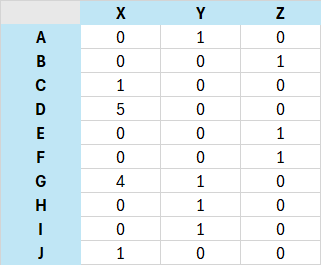
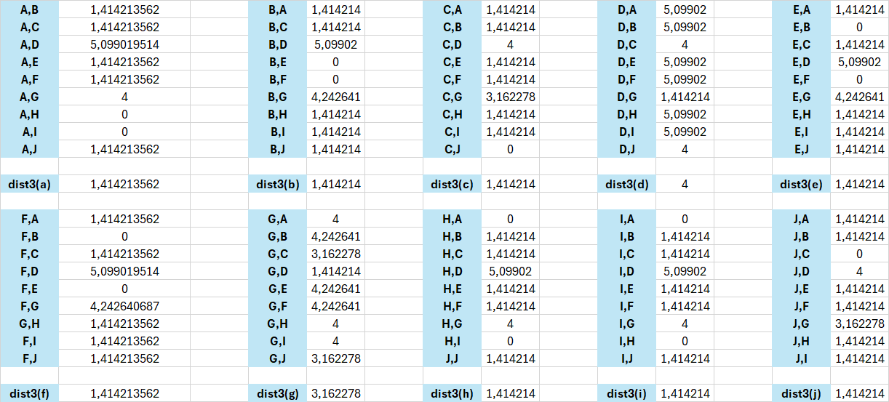
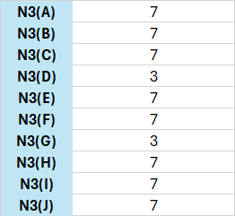

Penambangan data kelas B#
Iris Dataset#
Pengertian iris Dataset Iris merupakan dataset multivariate yang diperkenalkan oleh ahli statistika dan biologi inggris, Ronald Fisher, pada tahun 1936. Dataset bunga Iris ini sangat terkenal di dunia Machine Learning yang digunakan untuk klasifikasi. Dataset ini terdiri dari 3 spesies Iris yaitu Iris Setosa, Iris Virginica, dan Iris Versicolor dan tiap spesiesnya memiliki 50 sampel. Dalam data Iris terdapat 4 atribut yang dapat mempengaruhi klasifikasi yaitu, sepal length, sepal width, petal length, dan petal width dalam centimeter yang berbeda-beda.
Pengertian data understanding adalah tahapan pemahaman yang mendalam tentang data yang akan dianalisis, sehingga analisis selanjutnya dapat dilakukan dengan lebih efektif dan dapat diandalkan
Memahami Struktur dataset#
#menginstall mysql connector
!pip install mysql-connector-python
sukses
[notice] A new release of pip is available: 23.2.1 -> 24.0
[notice] To update, run: C:\Users\acer\AppData\Local\Programs\Python\Python312\python.exe -m pip install --upgrade pip
import mysql.connector
import pandas as pd
# koneksi ke mysql
conn = mysql.connector.connect(
disini saya sembunyikan koneksi
)
# kode sql untuk membaca data dengan panda
query = "SELECT * FROM iris"
dataset = pd.read_sql(query, conn)
# Menutup koneksi ke database
conn.close()
---------------------------------------------------------------------------
ModuleNotFoundError Traceback (most recent call last)
Cell In[2], line 2
1 import mysql.connector
----> 2 import pandas as pd
4 # koneksi ke mysql
5 conn = mysql.connector.connect(
6 host = 'mohammadilhamyusronrisqi088-mohammadilhamyusronrisqi088.a.aivencloud.com',
7 port = 14305,
(...)
10 database = 'defaultdb'
11 )
ModuleNotFoundError: No module named 'pandas'
#memanggil semua isi data
df_2 = _deepnote_execute_sql('SELECT * FROM iris', 'SQL_CD1E2FF4_1910_40CB_B267_B455491A2521', audit_sql_comment='', sql_cache_mode='cache_disabled')
df_2
| id | SepalLengthCm | SepalWidthCm | PetalLengthCm | PetalWidthCm | Species | |
|---|---|---|---|---|---|---|
| 0 | 1 | 5.1 | 3.5 | 1.4 | 0.2 | Iris-setosa |
| 1 | 2 | 4.9 | 3.0 | 1.4 | 0.2 | Iris-setosa |
| 2 | 3 | 4.7 | 3.2 | 1.3 | 0.2 | Iris-setosa |
| 3 | 4 | 4.6 | 3.1 | 1.5 | 0.2 | Iris-setosa |
| 4 | 5 | 5.0 | 3.6 | 1.4 | 0.2 | Iris-setosa |
| ... | ... | ... | ... | ... | ... | ... |
| 145 | 146 | 6.7 | 3.0 | 5.2 | 2.3 | Iris-virginica |
| 146 | 147 | 6.3 | 2.5 | 5.0 | 1.9 | Iris-virginica |
| 147 | 148 | 6.5 | 3.0 | 5.2 | 2.0 | Iris-virginica |
| 148 | 149 | 6.2 | 3.4 | 5.4 | 2.3 | Iris-virginica |
| 149 | 150 | 5.9 | 3.0 | 5.1 | 1.8 | Iris-virginica |
150 rows × 6 columns
Jenis jenis data yang terdapat di iris
#mengetahui banyak baris dan kolom
dataset.shape
(150, 6)
pada kode diatas diberitahu bahwa terdapat 150 dan 6 kolom
#mengetahui isi kolom
dataset.columns
Index(['id', 'SepalLengthCm', 'SepalWidthCm', 'PetalLengthCm', 'PetalWidthCm',
'Species'],
dtype='object')
pada kode diatas diberitahu nama-nama atribut kolom nama nama tersebut terinspirasi dari bunga iris sendiri pada species terdapat 3 yaitu :
Iris-versicolor
iris-setosa
Iris-virginica
#mengetahui type data yang digunakan pada masing-masing kolom
dataset.dtypes
id int64
SepalLengthCm float64
SepalWidthCm float64
PetalLengthCm float64
PetalWidthCm float64
Species object
dtype: object
Pada kode diatas diberitahu tentang type data dari masing-masing kolom pada kolom kiri adalah nama atribut kolom dan kolom kanan merupakan type data dari masing-masing kolom
#memanggil n baris pertama
n = 5
dataset.head(n)
| id | SepalLengthCm | SepalWidthCm | PetalLengthCm | PetalWidthCm | Species | |
|---|---|---|---|---|---|---|
| 0 | 1 | 5.1 | 3.5 | 1.4 | 0.2 | Iris-setosa |
| 1 | 2 | 4.9 | 3.0 | 1.4 | 0.2 | Iris-setosa |
| 2 | 3 | 4.7 | 3.2 | 1.3 | 0.2 | Iris-setosa |
| 3 | 4 | 4.6 | 3.1 | 1.5 | 0.2 | Iris-setosa |
| 4 | 5 | 5.0 | 3.6 | 1.4 | 0.2 | Iris-setosa |
pada kode diatas saya memberi nilai n sebanyak 5 sehinggan akan memperlihatkan isi 5 baris data pertama
Deksripsi Statistik Sederhana#
dataset.describe()
| id | SepalLengthCm | SepalWidthCm | PetalLengthCm | PetalWidthCm | |
|---|---|---|---|---|---|
| count | 150.000000 | 150.000000 | 150.000000 | 150.000000 | 150.000000 |
| mean | 75.500000 | 5.823333 | 3.054000 | 3.758667 | 1.198667 |
| std | 43.445368 | 0.862525 | 0.433594 | 1.764420 | 0.763161 |
| min | 1.000000 | 3.500000 | 2.000000 | 1.000000 | 0.100000 |
| 25% | 38.250000 | 5.100000 | 2.800000 | 1.600000 | 0.300000 |
| 50% | 75.500000 | 5.800000 | 3.000000 | 4.350000 | 1.300000 |
| 75% | 112.750000 | 6.400000 | 3.300000 | 5.100000 | 1.800000 |
| max | 150.000000 | 7.900000 | 4.400000 | 6.900000 | 2.500000 |
Kode diatas untuk melihat jumlah(banyak baris), rata-rata, standar eviasi, minimum data, nilai 25%(kuartil pertama), nilai 50%(nilai tengah),nilai 75%(kuaartil ketiga),maksimum data dari masing-masing kolom.
#untuk mengetahui data yang sama pada kolom tersebut
n = 'Species'
dataset.groupby(n).size()
Species
Iris-setosa 50
Iris-versicolor 50
Iris-virginica 50
dtype: int64
pada kode diatas saya mencoba untuk cek data yang sama pada kolom species, dan ditampilkan jenis data yang sama di sebelah kiri dan banyak data yang sama disebelah kanan
Visualisasi data#
Visualisasi data adalah representasi grafis dari informasi dan data. Dengan menggunakan elemen visual seperti bagan, grafik, dan peta , alat visualisasi data menyediakan cara yang mudah diakses untuk melihat dan memahami tren, outlier, dan pola dalam data. Selain itu, ini memberikan cara terbaik bagi karyawan atau pemilik bisnis untuk menyajikan data kepada audiens non-teknis tanpa kebingungan.
Dalam dunia Big Data, alat dan teknologi visualisasi data sangat penting untuk menganalisis informasi dalam jumlah besar dan membuat keputusan berdasarkan data.
import matplotlib.pyplot as plt
import seaborn as sns
# Histogram untuk kolom numerik
def plot_numeric_columns(df):
numeric_columns = ['SepalLengthCm', 'SepalWidthCm', 'PetalLengthCm', 'PetalWidthCm']
for col in numeric_columns:
plt.figure(figsize=(8, 6))
sns.histplot(df[col], kde=True)
plt.title(f'Histogram of {col}')
plt.xlabel(col)
plt.ylabel('Frequency')
plt.show()
# Bar plot untuk kolom kategorikal
def plot_categorical_column(df):
plt.figure(figsize=(8, 6))
sns.countplot(data=df, x='Species')
plt.title('Bar Plot of Species')
plt.xlabel('Species')
plt.ylabel('Count')
plt.show()
# Load data from database
df = dataset
conn.close()
# Plotting
plot_numeric_columns(df)
plot_categorical_column(df)
Preprocessing#
Data Cleaning#
Pada tahap ini yaitu melakukan penghapusan data, mempersiapkan data dan mengelompokkan data, hal ini ditujukan untuk mendapatkan data yang berkualitas. Penghapusan data dilakukan pada data yang salah, duplikat dan hilang. Mempersiapkan data merupakan proses data cleaning untuk mempersiapkan data agar sesuai dengan kebutuhan analisa, proses ini memungkinkan untuk mengubah data, menormalisasikan data abdnormal. kemudian tahapan pengelompokan data, tahap ini mengelompokkan data ke format yang sesuai dan terstruktur.
aspek data cleaning :
handling missing values : menangani nilai-nilai yang hilang, bisa dilakukan dengan cara menghapus baris yang terdapat kolom kosong, atau mengisinya
hapus data duplikat : menghapus data yang sama
handling outliers : Outliers adalah data yang secara signifikan berbeda dari pola umum dalam dataset. Menangani outlier bisa dilakukan dengan menghapusnya atau menormalisasikan data tersebut
Handling missing values menggunakan rata-rata#
Proses ini melakukan pengisian data kosong dengan nilai rata-rata, caranya yaitu dengan memilih data kosong, kemudian menghitung rata-rata dari semua data pada kolom yang hilang, kemudian isi data kosong tersebut dengan nilai rata-rata
df_2 = _deepnote_execute_sql('SELECT * FROM missingmean', 'SQL_CD1E2FF4_1910_40CB_B267_B455491A2521', audit_sql_comment='', sql_cache_mode='cache_disabled')
df_2
| Id | SepalLengthCm | SepalWidthCm | PetalLengthCm | PetalWidthCm | Species | |
|---|---|---|---|---|---|---|
| 0 | 1 | 5.1 | 3.5 | 1.4 | 0.2 | Iris-setosa |
| 1 | 2 | 4.9 | 3.0 | 1.4 | 0.2 | Iris-setosa |
| 2 | 3 | 5.9 | 3.2 | 1.3 | 0.2 | Iris-setosa |
| 3 | 4 | 5.9 | 3.1 | 1.5 | 0.2 | Iris-setosa |
| 4 | 6 | 5.4 | 3.9 | 1.7 | 0.4 | Iris-setosa |
| ... | ... | ... | ... | ... | ... | ... |
| 144 | 146 | 6.7 | 3.0 | 5.2 | 2.3 | Iris-virginica |
| 145 | 147 | 6.3 | 2.5 | 5.0 | 1.9 | Iris-virginica |
| 146 | 148 | 6.5 | 3.0 | 5.2 | 2.0 | Iris-virginica |
| 147 | 149 | 6.2 | 3.4 | 5.4 | 2.3 | Iris-virginica |
| 148 | 150 | 5.9 | 3.0 | 5.1 | 1.8 | Iris-virginica |
149 rows × 6 columns
–/mengubah 5 nilai menjadi nilai missing –
df_3 = _deepnote_execute_sql('UPDATE missingmean SET SepalLengthCm = NULL WHERE Id IN (3,4,5,7,8)', 'SQL_CD1E2FF4_1910_40CB_B267_B455491A2521', audit_sql_comment='', sql_cache_mode='cache_disabled')
df_3
kemudian cek apakah apakah sudah
df_4 = _deepnote_execute_sql('SELECT * FROM missingmean WHERE SepalLengthCm IS NULL', 'SQL_CD1E2FF4_1910_40CB_B267_B455491A2521', audit_sql_comment='', sql_cache_mode='cache_disabled')
df_4
| Id | SepalLengthCm | SepalWidthCm | PetalLengthCm | PetalWidthCm | Species | |
|---|---|---|---|---|---|---|
| 0 | 3 | None | 3.2 | 1.3 | 0.2 | Iris-setosa |
| 1 | 4 | None | 3.1 | 1.5 | 0.2 | Iris-setosa |
| 2 | 7 | None | 3.4 | 1.4 | 0.3 | Iris-setosa |
| 3 | 8 | None | 3.4 | 1.5 | 0.2 | Iris-setosa |
metode ini tidak berlaku pada data yang bukan bertype numeric contoh
df_5 = _deepnote_execute_sql('UPDATE missingmean SET Species = NULL WHERE Id IN (5)', 'SQL_CD1E2FF4_1910_40CB_B267_B455491A2521', audit_sql_comment='', sql_cache_mode='cache_disabled')
df_5
–/ disini saya mengubah salah satu menjadi Species menjadi null(karena Species bukan numeric)
df_6 = _deepnote_execute_sql('SELECT * FROM missingmean WHERE Species IS NULL', 'SQL_CD1E2FF4_1910_40CB_B267_B455491A2521', audit_sql_comment='', sql_cache_mode='cache_disabled')
df_6
| Id | SepalLengthCm | SepalWidthCm | PetalLengthCm | PetalWidthCm | Species |
|---|
df_7 = _deepnote_execute_sql('-- karena data null dan bukan numeric maka hapus saja data tersebut\nDELETE FROM missingmean WHERE Species IS NULL', 'SQL_CD1E2FF4_1910_40CB_B267_B455491A2521', audit_sql_comment='', sql_cache_mode='cache_disabled')
df_7
– kemudian cek apakah sudah terhapus :
df_8 = _deepnote_execute_sql('SELECT * FROM missingmean WHERE SepalLengthCm IS NULL', 'SQL_CD1E2FF4_1910_40CB_B267_B455491A2521', audit_sql_comment='', sql_cache_mode='cache_disabled')
df_8
| Id | SepalLengthCm | SepalWidthCm | PetalLengthCm | PetalWidthCm | Species | |
|---|---|---|---|---|---|---|
| 0 | 3 | None | 3.2 | 1.3 | 0.2 | Iris-setosa |
| 1 | 4 | None | 3.1 | 1.5 | 0.2 | Iris-setosa |
| 2 | 7 | None | 3.4 | 1.4 | 0.3 | Iris-setosa |
| 3 | 8 | None | 3.4 | 1.5 | 0.2 | Iris-setosa |
df_9 = _deepnote_execute_sql('-- menghitung rata-rata dari semua data kolom yang ada missing valuesnya:\nSELECT AVG(SepalLengthCm) AS rata2 FROM missingmean WHERE SepalLengthCm IS NOT NULL', 'SQL_CD1E2FF4_1910_40CB_B267_B455491A2521', audit_sql_comment='', sql_cache_mode='cache_disabled')
df_9
| rata2 | |
|---|---|
| 0 | 5.88 |
karena pada data tersebut rata-ratanya adalah 5.88 atau 5.9 jika dibulatkan maka data kosong atau null akan kita isi menjadi 5.9
df_10 = _deepnote_execute_sql('UPDATE missingmean SET SepalLengthCm = 5.9 WHERE SepalLengthCm IS NULL', 'SQL_CD1E2FF4_1910_40CB_B267_B455491A2521', audit_sql_comment='', sql_cache_mode='cache_disabled')
df_10
– memeriksa apakah ada data kosong
df_11 = _deepnote_execute_sql('SELECT * FROM missingmean WHERE SepalLengthCm IS NULL', 'SQL_CD1E2FF4_1910_40CB_B267_B455491A2521', audit_sql_comment='', sql_cache_mode='cache_disabled')
df_11
| Id | SepalLengthCm | SepalWidthCm | PetalLengthCm | PetalWidthCm | Species |
|---|
df_12 = _deepnote_execute_sql('SELECT * FROM missingmean', 'SQL_CD1E2FF4_1910_40CB_B267_B455491A2521', audit_sql_comment='', sql_cache_mode='cache_disabled')
df_12
| Id | SepalLengthCm | SepalWidthCm | PetalLengthCm | PetalWidthCm | Species | |
|---|---|---|---|---|---|---|
| 0 | 1 | 5.1 | 3.5 | 1.4 | 0.2 | Iris-setosa |
| 1 | 2 | 4.9 | 3.0 | 1.4 | 0.2 | Iris-setosa |
| 2 | 3 | 5.9 | 3.2 | 1.3 | 0.2 | Iris-setosa |
| 3 | 4 | 5.9 | 3.1 | 1.5 | 0.2 | Iris-setosa |
| 4 | 6 | 5.4 | 3.9 | 1.7 | 0.4 | Iris-setosa |
| ... | ... | ... | ... | ... | ... | ... |
| 144 | 146 | 6.7 | 3.0 | 5.2 | 2.3 | Iris-virginica |
| 145 | 147 | 6.3 | 2.5 | 5.0 | 1.9 | Iris-virginica |
| 146 | 148 | 6.5 | 3.0 | 5.2 | 2.0 | Iris-virginica |
| 147 | 149 | 6.2 | 3.4 | 5.4 | 2.3 | Iris-virginica |
| 148 | 150 | 5.9 | 3.0 | 5.1 | 1.8 | Iris-virginica |
149 rows × 6 columns
bisa dilihat data 3,4,7,8 udah diisi dengan rata-rata yang barusan dan data nomor 5 dihapus karena memiliki data kosong pada data yang bukan merupakan numeric
Penanganan Missing values menggunakan KNN#
KNN (K-Nearest Neighbors) adalah metode untuk mengambil keputusan menggunakan pembelajaran terawasi dimana hasil dari data masukan yang baru diklasifikasi berdasarkan terdekat dalam data nilai. Langkah-langkah metode KNN :
Tentukan parameter K (jumlah tetangga paling dekat).
Hitung kuadrat jarak euclide masing – masing objek terhadap data sample yang diberikan.
Urutkan objek – objek kedalam kelompok yang memiliki jarak terkecil.
Kumpulkan kategori Y (Klasifikasi nearest neighbor).
Dengan kategori nearest neighbor yang paling banyak, maka dapat diprediksikan nilai query instance yang telah dihitung. untuk rumus menghitung kuadrat jarak euclide yaitu : $\( d =\sqrt{(x_{2}-x_{1})^{2}+(y_{2}-y_{1})^{2}} \)$ kemudian saya akan melakukan pengujian dengan sql
– ubah data menjadi null
df_13 = _deepnote_execute_sql('UPDATE knn SET SepalLengthCm = NULL WHERE Id IN (3,4,5,7,8)', 'SQL_CD1E2FF4_1910_40CB_B267_B455491A2521', audit_sql_comment='', sql_cache_mode='cache_disabled')
df_13
df_14 = _deepnote_execute_sql('SELECT * FROM knn WHERE SepalLengthCm IS null', 'SQL_CD1E2FF4_1910_40CB_B267_B455491A2521', audit_sql_comment='', sql_cache_mode='cache_disabled')
df_14
| Id | SepalLengthCm | SepalWidthCm | PetalLengthCm | PetalWidthCm | Species | |
|---|---|---|---|---|---|---|
| 0 | 3 | None | 3.2 | 1.3 | 0.2 | Iris-setosa |
| 1 | 4 | None | 3.1 | 1.5 | 0.2 | Iris-setosa |
| 2 | 5 | None | 3.6 | 1.4 | 0.2 | Iris-setosa |
| 3 | 7 | None | 3.4 | 1.4 | 0.3 | Iris-setosa |
| 4 | 8 | None | 3.4 | 1.5 | 0.2 | Iris-setosa |
import mysql.connector
import pandas as pd
from sklearn.neighbors import KNeighborsClassifier
from sklearn.metrics import accuracy_score
from sklearn.model_selection import cross_val_score, train_test_split
from sklearn.preprocessing import LabelEncoder
import matplotlib.pyplot as plt
import seaborn as sns
# Koneksi ke database MySQL
connection = mysql.connector.connect(
disini saya sembunyikan koneksi
)
# Baca data dari database
query = "SELECT * FROM knn WHERE SepalLengthCm IS NOT NULL"
dataset = pd.read_sql(query, connection)
connection.close()
# Memisahkan fitur dan label
features = ['SepalLengthCm', 'SepalWidthCm', 'PetalLengthCm', 'PetalWidthCm']
X = dataset[features].values
y = dataset['Species'].values
# Encode label menjadi numerik
label_encoder = LabelEncoder()
y = label_encoder.fit_transform(y)
# Bagi data menjadi data latih dan data uji
X_train, X_test, y_train, y_test = train_test_split(X, y, test_size=0.2, random_state=0)
# Buat model KNN dengan k=5
knn_classifier = KNeighborsClassifier(n_neighbors=5)
knn_classifier.fit(X_train, y_train)
# Prediksi data uji
y_pred = knn_classifier.predict(X_test)
# Hitung akurasi
accuracy = accuracy_score(y_test, y_pred) * 100
print('Model accuracy: ' + str(round(accuracy, 2)) + '%')
# Inisialisasi nilai k
k_values = list(range(1, 50, 2))
cv_scores = []
# Lakukan 10-fold cross-validation
for k_val in k_values:
knn_model = KNeighborsClassifier(n_neighbors=k_val)
scores = cross_val_score(knn_model, X_train, y_train, cv=10, scoring='accuracy')
cv_scores.append(scores.mean())
# Hitung MSE
misclassification_errors = [1 - score for score in cv_scores]
# Plot kurva misclassification error
plt.figure(figsize=(15, 10))
plt.title('nilai optimal neightbors', fontsize=20)
plt.xlabel('Number of Neighbors (K)', fontsize=15)
plt.ylabel('Misclassification Error', fontsize=15)
sns.set_style("whitegrid")
plt.plot(k_values, misclassification_errors)
plt.show()
# Temukan nilai k terbaik
best_k_value = k_values[misclassification_errors.index(min(misclassification_errors))]
print("Nilai optimal neighbors: %d" % best_k_value)
/tmp/ipykernel_33/3947043957.py:21: UserWarning: pandas only supports SQLAlchemy connectable (engine/connection) or database string URI or sqlite3 DBAPI2 connection. Other DBAPI2 objects are not tested. Please consider using SQLAlchemy.
dataset = pd.read_sql(query, connection)
Model accuracy: 96.55%
Nilai optimal neighbors: 15
#proses imputasi
import pandas as pd
import numpy as np
from sklearn.impute import KNNImputer
from sklearn.preprocessing import MinMaxScaler
import mysql.connector
# Koneksi ke database MySQL
conn = mysql.connector.connect(
disini saya sembunyikan koneksi
)
# Baca data dari database
query = "SELECT * FROM knn"
df_orig = pd.read_sql(query, conn)
# Simpan DataFrame asli
df_original = df_orig.copy()
# Tutup koneksi ke database
conn.close()
# Hapus kolom 'Id' dan 'Species'
df = df_orig.drop(['Id', 'Species'], axis=1)
# Periksa apakah ada nilai yang hilang (NA/null) dalam DataFrame
missing_values = df.isna().any()
print(missing_values)
# Hitung jumlah nilai yang hilang
sum_of_missing_values = df.isna().sum()
print(sum_of_missing_values)
# Normalisasi data menggunakan MinMaxScaler
scaler = MinMaxScaler()
df_normalized = pd.DataFrame(scaler.fit_transform(df), columns=df.columns)
print(df_normalized.head())
# Simpan indeks baris yang memiliki nilai yang hilang sebelum imputasi
indices_missing_before_imputation = df_original[df_original.isnull().any(axis=1)].index.tolist()
# Tampilkan baris yang memiliki nilai yang hilang sebelum imputasi
missing_rows = df[df.isnull().any(axis=1)]
print(missing_rows)
# Gunakan KNNImputer untuk mengisi nilai yang hilang
imputer = KNNImputer(n_neighbors=best_k_value)
df_imputed = pd.DataFrame(imputer.fit_transform(df_normalized), columns=df.columns)
# Mengembalikan nilai-nilai yang dinormalisasi ke dalam skala aslinya
df_imputed = pd.DataFrame(scaler.inverse_transform(df_imputed), columns=df.columns)
# Tampilkan baris yang telah diimputasi
imputed_missing_rows = df_imputed.loc[indices_missing_before_imputation]
print(imputed_missing_rows)
# Gabungkan kolom 'Id' dan 'Species' ke DataFrame yang telah diimputasi
df_imputed['Id'] = df_orig['Id']
df_imputed['Species'] = df_orig['Species']
# Membuka kembali koneksi ke database MySQL
conn = mysql.connector.connect(
disini saya sembunyikan koneksi
)
# Mengubah data di database MySQL
cursor = conn.cursor()
for index, row in df_imputed.iterrows():
id = row['Id']
sepal_length = row['SepalLengthCm']
sepal_width = row['SepalWidthCm']
petal_length = row['PetalLengthCm']
petal_width = row['PetalWidthCm']
species = row['Species']
cursor.execute("UPDATE knn SET SepalLengthCm=%s, SepalWidthCm=%s, PetalLengthCm=%s, PetalWidthCm=%s, Species=%s WHERE Id=%s",
(sepal_length, sepal_width, petal_length, petal_width, species, id))
# Melakukan commit perubahan
conn.commit()
# Menutup koneksi
conn.close()
/tmp/ipykernel_33/3431121784.py:19: UserWarning: pandas only supports SQLAlchemy connectable (engine/connection) or database string URI or sqlite3 DBAPI2 connection. Other DBAPI2 objects are not tested. Please consider using SQLAlchemy.
df_orig = pd.read_sql(query, conn)
SepalLengthCm True
SepalWidthCm False
PetalLengthCm False
PetalWidthCm False
dtype: bool
SepalLengthCm 5
SepalWidthCm 0
PetalLengthCm 0
PetalWidthCm 0
dtype: int64
SepalLengthCm SepalWidthCm PetalLengthCm PetalWidthCm
0 0.222222 0.625000 0.067797 0.041667
1 0.166667 0.416667 0.067797 0.041667
2 NaN 0.500000 0.050847 0.041667
3 NaN 0.458333 0.084746 0.041667
4 NaN 0.666667 0.067797 0.041667
SepalLengthCm SepalWidthCm PetalLengthCm PetalWidthCm
2 NaN 3.2 1.3 0.2
3 NaN 3.1 1.5 0.2
4 NaN 3.6 1.4 0.2
6 NaN 3.4 1.4 0.3
7 NaN 3.4 1.5 0.2
SepalLengthCm SepalWidthCm PetalLengthCm PetalWidthCm
2 4.826667 3.2 1.3 0.2
3 4.766667 3.1 1.5 0.2
4 5.133333 3.6 1.4 0.2
6 5.040000 3.4 1.4 0.3
7 5.060000 3.4 1.5 0.2
– memeriksa apakah masih ada nilai kosong
df_15 = _deepnote_execute_sql('SELECT * FROM knn WHERE SepalLengthCm is null', 'SQL_CD1E2FF4_1910_40CB_B267_B455491A2521', audit_sql_comment='', sql_cache_mode='cache_disabled')
df_15
| Id | SepalLengthCm | SepalWidthCm | PetalLengthCm | PetalWidthCm | Species |
|---|
Data sudah terisi kan
df_16 = _deepnote_execute_sql('SELECT * FROM knn', 'SQL_CD1E2FF4_1910_40CB_B267_B455491A2521', audit_sql_comment='', sql_cache_mode='cache_disabled')
df_16
| Id | SepalLengthCm | SepalWidthCm | PetalLengthCm | PetalWidthCm | Species | |
|---|---|---|---|---|---|---|
| 0 | 1 | 5.100000 | 3.5 | 1.4 | 0.2 | Iris-setosa |
| 1 | 2 | 4.900000 | 3.0 | 1.4 | 0.2 | Iris-setosa |
| 2 | 3 | 4.826667 | 3.2 | 1.3 | 0.2 | Iris-setosa |
| 3 | 4 | 4.766667 | 3.1 | 1.5 | 0.2 | Iris-setosa |
| 4 | 5 | 5.133333 | 3.6 | 1.4 | 0.2 | Iris-setosa |
| ... | ... | ... | ... | ... | ... | ... |
| 145 | 146 | 6.700000 | 3.0 | 5.2 | 2.3 | Iris-virginica |
| 146 | 147 | 6.300000 | 2.5 | 5.0 | 1.9 | Iris-virginica |
| 147 | 148 | 6.500000 | 3.0 | 5.2 | 2.0 | Iris-virginica |
| 148 | 149 | 6.200000 | 3.4 | 5.4 | 2.3 | Iris-virginica |
| 149 | 150 | 5.900000 | 3.0 | 5.1 | 1.8 | Iris-virginica |
150 rows × 6 columns
Menyatukan data#
Proses untuk menyatukan beberapa tabel dari banyak sql untuk stepnya yaitu koneksikan terlebih dahulu ke masing masing sql, kemudian disatukan
import pandas as pd
import psycopg2
import mysql.connector
# Koneksi ke MySQL
mysql_connection = mysql.connector.connect(
disini saya sembunyikan koneksi
)
# Koneksi ke PostgreSQL
pg_connection = psycopg2.connect(
disini saya sembunyikan koneksi
)
# Query untuk MySQL
mysql_query = "SELECT * FROM iris2"
# Query untuk PostgreSQL
pg_query = "SELECT * FROM iris2"
# Baca data dari MySQL
mysql_data = pd.read_sql(mysql_query, mysql_connection)
# Baca data dari PostgreSQL
pg_data = pd.read_sql(pg_query, pg_connection)
# Gabungkan data
merged_data = pd.concat([mysql_data, pg_data], axis=1)
# Tampilkan hasil gabungan
print(merged_data)
# Tutup koneksi
mysql_connection.close()
pg_connection.close()
/tmp/ipykernel_37/3454771244.py:30: UserWarning: pandas only supports SQLAlchemy connectable (engine/connection) or database string URI or sqlite3 DBAPI2 connection. Other DBAPI2 objects are not tested. Please consider using SQLAlchemy.
mysql_data = pd.read_sql(mysql_query, mysql_connection)
/tmp/ipykernel_37/3454771244.py:33: UserWarning: pandas only supports SQLAlchemy connectable (engine/connection) or database string URI or sqlite3 DBAPI2 connection. Other DBAPI2 objects are not tested. Please consider using SQLAlchemy.
pg_data = pd.read_sql(pg_query, pg_connection)
Id SepalLengthCm SepalWidthCm id petallengthcm petalwidthcm \
0 1 4.5 3.5 1 1.4 0.2
1 2 4.9 3.0 2 1.4 0.2
2 3 4.7 3.2 3 1.3 0.2
3 4 4.6 3.1 4 1.5 0.2
4 5 5.0 3.6 5 1.4 0.2
.. ... ... ... ... ... ...
145 146 6.7 3.0 146 5.2 2.3
146 147 6.3 2.5 147 5.0 1.9
147 148 6.5 3.0 148 5.2 2.0
148 149 6.2 3.4 149 5.4 2.3
149 150 5.9 3.0 150 5.1 1.8
species
0 Iris-setosa
1 Iris-setosa
2 Iris-setosa
3 Iris-setosa
4 Iris-setosa
.. ...
145 Iris-virginica
146 Iris-virginica
147 Iris-virginica
148 Iris-virginica
149 Iris-virginica
[150 rows x 7 columns]
Pada contoh diatas saya menyatukan dua sql dari postgres dan mysql, pada postgres saya buatkan sql dengan kolom id,SepalLengthCm,SepalWidthCm dan untuk Mysql yaitu PetalLengthCm,PetalWidthCm,Species.
Deteksi Outlier(Lokal Outlier Factor)#
Konseplokal Outlier Faktor#
Outlier merupakan data abnormal, atau berbeda dari data lainnya, LOF adalah operasi untuk memeriksa apakah ada outlier pada lingkungan data tersebut.Inti dari LOF adalah perbandingan antara kepadatan lokal dari suatu titik data dengan kepadatan tetangganya. Jika sebuah titik memiliki kepadatan yang jauh lebih rendah dibandingkan dengan tetangganya, maka titik tersebut dianggap sebagai outlier atau titik anomali. LOF memungkinkan kita untuk mendeteksi anomali dalam set data yang tidak hanya bergantung pada nilai absolut, tetapi juga memperhitungkan konteks lokal dari setiap titik data.
kepadatan diukur dengan mempertimbangkan jarak antara titik data dan beberapa tetangganya. Semakin kecil jaraknya, semakin dekat tetangganya, dan semakin tinggi kepadatan lokasi tersebut. LOF membandingkan kepadatan lokal dari suatu titik dengan kepadatan lokal dari tetangganya untuk menentukan apakah titik tersebut adalah anomali.
Menghitung manual Locak Outlier Factor#
Data contoh data dengan tipe numeric 3 fitur jumlah data 10 k=3 p=2 (euclidian dista
Untuk rumusnya yaitu \( d =\sqrt{(x_{2}-x_{1})^{2}+(y_{2}-y_{1})^{2}} \)\( untuk penerapannya yaitu disini karena terdapat 3 k maka timbah z, jadi \)\(\sqrt{(x_{2}-x_{1})^{2}+(y_{2}-y_{1})^{2}+(z_{2}-z_{1})^{2}}\)\( sehingga penerapan pada a,b yaitu : \)\(\sqrt{(0-0)^{2}+(1-0)^{2}+(0-1)^{2}}\)\( \)\(\sqrt{2}\)$ = 1,414214 sehingga
dist3 berasal dari nilai terbesar ke 3, kemudian mencari data apa saja yang masuk(kurang dari sama dengan nilai dist3)
Setelah mengetahui neighborsnya maka dilakukan pencaria nilai Reachability Distance dengan rumus : $\(\text{reachdist}(p,o) = \max\{k\text{-distance}(o), \text{euclidean\_distance}(p, o)\}\)$
reachdist(p,o) adalah jarak reachability dari titik p ke tetangga o.
k-distance(o) adalah nilai k-distance dari titik o.
euclidean_distance(p, o) adalah jarak Euclidean antara titik p dan tetangga o.
Kemudian mencari nilai Local Reachability Density (LRD) dengan rumus : $\( LRD(p) = \frac{n}{\sum_{o \in N(p)} \text{reachdist}(p,o)} \)$
LRD(p) adalah nilai Local Reachability Density dari titik ( p ).
n adalah jumlah tetangga ke-n dari titik ( p ).
N(p) adalah himpunan tetangga-tetangga dari titik ( p ).
reachdist(p,o) adalah jarak reachability dari titik ( p ) ke setiap tetangga ( o ) dalam ( N(p) ).
dan setelah itu mencari Local Outlier Factor (LOF) dengan rumus : $\( LOF(p) = \frac{\sum_{o \in N(p)} \frac{LRD(o)}{LRD(p)}}{k} \)$
LOF(p) adalah nilai Local Outlier Factor dari titik ( p ).
N(p) adalah himpunan tetangga-tetangga dari titik ( p ).
LRD(p) adalah nilai LRD dari titik ( p ) sendiri.
LRD(o) adalah nilai LRD dari setiap tetangga ( o ) dalam ( N(p) ).
k adalah jumlah tetangga ke-n.
Nilai outlier pada data teratas adalah d dan g karena memiliki perbedaan yang signifikan dengan nilai yang lainnya
Menghitung menggunakan python(Scikit Learn)#
from sklearn.neighbors import LocalOutlierFactor
import numpy as np
import numpy as np
# data random
X = [ (0, 1, 0,)
,(0, 0, 1,)
,(1, 0, 0,)
,(25, 0, 0,)
,(0, 0, 1,)
,(0, 0, 1,)
,(16, 1, 0,)
,(0, 1, 0,)
,(0, 1, 0,)
,(1, 0, 0,)]
# Mencetak dataset contoh
print("Dataset contoh:")
print(X)
# Menginisialisasi model LOF
lof_model = LocalOutlierFactor(n_neighbors=3, p=2)
# Melatih model
lof_model.fit(X)
# Memprediksi outlier
outlier_labels = lof_model.fit_predict(X)
# Mencetak label outlier (-1 untuk outlier, 1 untuk data normal)
print("\nLabel outlier:")
print(outlier_labels)
# Menampilkan skor LOF untuk setiap sampel
print("\nLOF scores:")
print(-lof_model.negative_outlier_factor_)
Dataset contoh:
[(0, 1, 0), (0, 0, 1), (1, 0, 0), (25, 0, 0), (0, 0, 1), (0, 0, 1), (16, 1, 0), (0, 1, 0), (0, 1, 0), (1, 0, 0)]
Label outlier:
[ 1 1 1 -1 1 1 -1 1 1 1]
LOF scores:
[ 1. 1. 1. 10.29334214 1. 1.
8.78166093 1. 1. 1. ]
Pada kode tersebut yang negatif adalah yang outlier, maka data oulier terletak pada baris 5 dan 8
Implementasi Local Outlier Factor pada data iris#
kode dibawah saya implementasikan ke-mysql saya yang sudah diubah isinya(id6 menjadi 200 dan id10 menjadi 20)
import mysql.connector
import numpy as np
from sklearn.neighbors import LocalOutlierFactor
# Koneksi ke database MySQL
connection = mysql.connector.connect(
disini saya sembunyikan koneksi
)
if connection:
cursor = connection.cursor()
# Query SQL untuk mengambil data Iris
query = "SELECT Id,SepalLengthCm, SepalWidthCm, PetalLengthCm FROM outlier LIMIT 10"
# Ambil data dari MySQL
cursor.execute(query)
records = cursor.fetchall()
if records:
# Ubah data menjadi numpy array
data_array = np.array(records)[:, 1:] # Exclude 'id' column
# Hitung LOF
lof = LocalOutlierFactor(n_neighbors=3, p=2, contamination=0.2)
outlier_scores = lof.fit_predict(data_array)
# Tampilkan data Iris beserta skor outlier
print("ID | SepalLengthCm | SepalWidthCm | PetalLengthCm | Outlier Score")
for i in range(len(records)):
print("{} | {} | {} | {} | {}".format(records[i][0], records[i][1], records[i][2], records[i][3], outlier_scores[i]))
else:
print("Failed to fetch data from MySQL.")
# Tutup koneksi ke database MySQL
cursor.close()
connection.close()
else:
print("Failed to connect to MySQL database.")
ID | SepalLengthCm | SepalWidthCm | PetalLengthCm | Outlier Score
1 | 5.1 | 3.5 | 1.4 | 1
2 | 4.9 | 3.0 | 1.4 | 1
3 | 4.7 | 3.2 | 1.3 | 1
4 | 4.6 | 3.1 | 1.5 | 1
5 | 5.0 | 3.6 | 1.4 | 1
6 | 200.0 | 3.9 | 1.7 | -1
7 | 4.6 | 3.4 | 1.4 | 1
8 | 5.0 | 3.4 | 1.5 | 1
9 | 4.4 | 2.9 | 1.4 | 1
10 | 4.9 | 20.0 | 1.5 | -1
ditunjukkan bahwa ada outlier (-1) di baris 6 dan 10
![Created in deepnote.com]() Created in Deepnote
Created in Deepnote